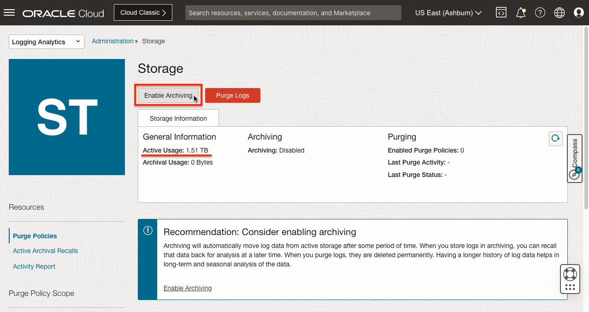

18.1 OCI Logging Analytics로 로그 관리시 비용 최적화
OCI에서 발생하는 로그 알아보기
OCI Logging 서비스를 사용하여, 관리 및 검색할 수 있는 로그는 다음과 같습니다.
-
감사 로그(Audit logs) : OCI Audit 서비스에서 생성된 이벤트와 관련된 로그입니다. OCI 문서에 따르면, OCI Audit 서비스는 OCI 공개 API 엔드포인트에 대한 호출을 로그 이벤트로 기록합니다. 현재 모든 OCI 서비스는 Audit 로깅을 지원합니다. Object 스토리지로 예를 들면, Bucket 관련된 이벤트를 모두 Audit 로그로 기록하지만, Object에 대한 API 호출은 기록하지 않습니다. 각 OCI 서비스에 따라 로깅하는 영역의 약간은 차이는 있어 보입니다. OCI 콘솔, CLI, SDK, OCI 서비스를 포함하여, 사용자 클라이언트의 API 요청을 포함하여, Audit 로그 이벤트가 기록됩니다.
-
Audit Log Retention Period 문서를 기준으로 Audit 로그는 365일 동안 보존됩니다. OCI 콘솔 테넌시 정보에서도 확인할 수 있습니다.
-
-
서비스 로그(Service logs): OCI 서비스(예를 들면, OCI Object Storage, OCI API Gateway 등)에서 발생하는 서비스 로그입니다. 지원되는 각 서비스별로 사전 정의된 로깅 목록이 있습니다. 필요하면 각OCI 서비스 생성자원에 대해서 서비스 로그를 활성화하면, OCI Logging 서비스로 로깅됩니다.
-
지원 서비스 목록 - Service Log Reference
-
로그 보존 기간은 최소 1개월에서 최대 6개월까지입니다.
-
-
커스텀 로그(Custom logs): 사용자 애플리케이션, 다른 클라우드 공급자 또는 온프레미스 환경 등에서 OCI 자체 발생 로그가 아닌 로그를 말합니다. 커스텀 로그를 OCI Logging 서비스로 수집하는 방법은 Logging API로 호출하여 전달하거나, 통합 모니터링 에이전트를 구성하여 수집하는 방법이 있습니다. 예를 들어, OCI Compute 인스턴스의 경우에는, 인스턴스 상세 페이지에서 통합 모니터링 에이전트를 활성하고, 수집할 로그 위치를 지정하여 수집합니다.
- 로그 보존 기간은 서비스 로그와 동일합니다. 최소 1개월에서 최대 6개월까지입니다.
비용은 로그 저장 스토리지 사용분에 대해 발생합니다. 즉 로그 발생량과 보존 기간에 따라 비용이 늘어나는 구조입니다.
-
작성일 기준 가격
OCI Logging 단위 가격 단위 첫 10GB의 로그 스토리지/월 무료 GB 로그 스토리지/월 10GB 이상의 로그 스토리지/월 $0.05 GB 로그 스토리지/월
위와 같이 OCI Logging 서비스를 이용하여, 로그를 수집하고 검색할 수 있습니다. 서비스 로그, 커스텀 로그의 경우 최장 6개월, Audit 로그의 경우 1년 (365일 ) 보관이 최대입니다. 보관 규정상 그 이상으로 필요한 경우, OCI Logging 수집된 로그를 별도 이관하여 보관하는 과정이 필요합니다. 또한 로그 전문 분석 도구를 사용하는 경우에도 OCI Logging에서 수집된 로그를 전문 분석 도구로 전달하는 방법이 필요합니다.
OCI Logging Analytics로 보존 기간 및 비용 최적화 하기
OCI Logging Analytics Best Practices Series - Cost Optimization을 참조하여, 일반적인 로그 보존 기간 규정을 준수하기 위한 설정을 알아 봅니다.
OCI에서는 로그 전문 분석 도구로 OCI Logging Analytics 서비스를 제공합니다. 여기서는 로그 분석 기능외에, 로그 보존 기간에 관해 알아봅니다. OCI Logging Analytics로 전달된 로그는 기한제한없이 영구 보관이 가능하지만, 당연히 비용 문제가 발생하기 때문에 요구되는 보관 규정을 준수하면서 비용을 최적화하는 방법을 여기서는 알아봅니다.
요구 사항 예시
- 로그 보존 기간 규정: 5년
- 평상시 운영관리상으로 사용하는, 일상적인 로그 분석을 위해 필요한 로그 데이터: 최근 3개월치
- 3개월이 지난 로그는 저렴한 비용으로 보관 원함
OCI Logging Analytics의 스토리지 관리 방식
-
Archive Logs: 당장 사용하지는 않지만, 향후 분석을 위해 시간이 지난 로그는 비용 절감을 위해 아카이브하는 기능을 제공합니다. 아키이브를 활성화하고, 경과 일수(Active Storage Duration)를 지정하면, 로그 타임스탬프를 기준으로 경과 일수가 지나면, Active 스토리지에서 상대적으로 저렴한 Archive 스토리지로 자동으로 이동합니다. 이후 과거 로그에 대한 분석이 필요할 때, 다시 리콜하여, Archive 스토리지에서 Active 스토리지로 복사할 수 있습니다.
- Recall Archived Logs: : 아카이브 된 후, 분석에 필요한 경우, 시간 범위을 지정하여 원하는 로그를 Active 스토리지로 Recall(회수) 할 수 있습니다. 회수된 로그는 다시 릴리즈를 해야 Archive 상태로 돌아갑니다. 그렇지 않은 경우, 회수된 로그에 대한 Active 스토리지 비용이 발생합니다.
- Release Recalled Logs: Recall(회수)된 로그를 분석이 끝나면, 다시 릴리즈하여, Archive 상태로 돌려 비용을 최적화합니다.
- Active 스토리지 사용량이 최소 용량인 1TB을 초과시 아카이브 기능을 활성화 할 수 있습니다.
- Active 스토리지 최소 보관 기간은 30일로, 30일이 지난 로그에 대해서 아카이브 할 수 있습니다.
-
OCI Logging Analytics에서 로그는 내부적으로 OCI가 관리하는 오브젝트 스토리지 Bucket에 저장되며, Bucket 단위로 아카이브됩니다. 하나의 Bucket내에 경과 일수(Active Storage Duration)가 지난 로그와 아닌 로그가 혼재한 경우, 해당 Bucket내 모든 로그가 경과 일수를 지나야 해당 Bucket이 아카이브 됩니다. 이점 참고합니다.
-
작성일 기준 가격
OCI Logging Analytics 단위 가격 단위 (기준 가격으로 단순 계산) 가격/GB/월 첫 10GB 로그 스토리지 무료 활성(Active) 스토리지 - 로깅 분석 스토리지/월
(첫 35개 로깅 분석 스토리지 유닛/월)$372.00 로깅 분석 스토리지 유닛/월 $1.2400 활성(Active) 스토리지 - 로깅 분석 스토리지/월
(35개 초과, 103개 미만 로깅 분석 스토리지 유닛/월)$260.40 로깅 분석 스토리지 유닛/월 $0.8680 활성(Active) 스토리지 - 로깅 분석 스토리지/월
(103개 초과 로깅 분석 스토리지 유닛/월)$223.20 로깅 분석 스토리지 유닛/월 $0.7440 아카이브(Archive) 스토리지 - 시간당 로깅 분석 스토리지 유닛 $0.02 시간당 로깅 분석 스토리지 유닛 $0.0496 (31일 기준) - Storage Unit(로깅 분석 스토리지 유닛)은 300GB로 정의
- 가격을 기준으로 월단위 GB당 가격(가격/GB/월)을 단순 계산해 보면, 아카이브 스토리지가 상대적으로 저렴함을 알 수 있습니다.
요구 사항을 맞추기 위한 OCI Logging Analytics 설정
- Active 스토리지 사용량이 최소 용량인 1TB이 초과하면, Active Storage Duration을 90일(3개월)로 설정하여 아카이브 로그 활성화
- 5년 지난 로그는 삭제하도록 퍼지 정책을 설정
OCI Logging Analytics로 보존 기간 및 비용 최적화 설정하기
Logging Analytics 시작하기
-
OCI 콘솔로 이동합니다.
-
왼쪽 위 내비게이션 메뉴에서 Observability & Management > Logging Analytics > Home으로 이동합니다.
-
Start Using Logging Analytics을 클릭하여, 대상 리전에 서비스를 활성화합니다.
-
필터에서 Log Group Compartment를 원하는 대상으로 선택합니다.
-
Service Connector를 통해 Audit Log를 OCI Logging Analytics 수집하기를 설정합니다.
-
Next를 클릭하여 다음으로 이동하여, 설정이 완료되기를 기다립니다.
- 완료되면 관련 Policy가 생성되고, Root Compartment에 Service Connector로 logging_analytics_ociaudit가 설정되어, OCI Audit Log의 Logging Analytics로의 수집이 구성됩니다.
- 필요하면, 추가적으로 서비스 로그, 커스터 로그도 Service Connector를 통해 Logging Analytics로 전달하도록 구성합니다.
- 여기서는 보존기간 및 비용 최적화에 대해 알아 봅니다.
Logging Analytics 아키이브 활성화
-
Active 스토리지 최소 보관 기간은 30일을 충족하고 아카이브할 대상이 준비되었습니다. 8월 1일부터 작성일까지 조회한 결과는 다음과 같습니다.
-
Logging Analytics 메뉴에서 Storage로 이동합니다.
-
Active Usage가 1TB을 초과하면, 아키이브를 활성화 할 수 있습니다. Enable Archiving 버튼을 클릭합니다.

-
앞선 요구 사항 예시에 맞게 아카이브 조건을 지정합니다. (단, 여기서는 로그 축적된 기간이 짧은 제약으로 30일 이후 아카이브하도록 설정하였습니다)
- 로그 보존 기간 규정: 5년 -> Active: 30일 + Archive: 1800일, 합계 1830일(대략 5년)
- 평상시 운영관리상으로 사용하는, 일상적인 로그 분석을 위해 필요한 로그 데이터: 최근 3개월치 -> 여기서는 Active: 30일
- 3개월이 지난 로그는 저렴한 비용으로 보관 원함 -> 30일 이후 비용절감을 위해 아카이브
-
아키이브 활성화 결과
-
아카이브가 설정되었습니다. Active, Archive 보관 기간은 이후에도 아카이브 세팅 변경을 통해 수정할 수 있습니다.
-
일단 아카이브되면, 보관 기간 설정외에 쿼리를 통한 특정 로그에 대한 삭제는 되지 않습니다. 필요하면, 아카이브되기 전에 Active 상태에서 퍼지되도록 Purge Policies를 설정합니다.
-
-
참고 블로그에서는 “Archive process runs very 24 hours, not depending on the time when the archive was enabled” 라고 실행주기를 설명하고 있습니다. 활성화 시점에 상관없이 아카이브 프로세스는 매 24시간 마다 어느 시점에 실행된다고 합니다.
-
테스트에서는 활성 후 아래와 같이 보입니다. 실행중이라기 보다는 대기 큐에 있으며, 실행될 예정으로 판단됩니다.
-
아래와 같이 몇 시간 이후에 종료된 것을 볼 수 있습니다.
-
Active Report를 보면, 이후에도 매 24시간 마다 아카이브 프로세스가 실행되는 것을 볼 수 있습니다.
-
-
아카이빙이 실행되고, Active Storage Duration: 30일이 지난 대상 로그(실제로는 Bucket 단위)가 아카이브 되어 Active 사용량이 줄어든 것을 볼 수 있습니다.
-
Log Explorer에서 다시 처음과 동일한 기간으로 조회해 봅니다. 8월 1일부터 금일까지 조회합니다. 17일부터 로그만 남아 있습니다.
- 아래는 OCI Audit Logs 기준 조회내용입니다. 다른 로그 부분도 아카이브된 부분이 있어 위와 같이 Active 용량이 줄어들었습니다.
아키이브 된 로그 리콜하기
평상시 운영관리상으로 사용하는, 일상적인 로그 분석을 위해 필요한 로그 데이터(테스트 기준으로는 30일치)는 Active 상태이므로 앞서 Log Explorer에서 조회되었습니다. 아카이브 된 로그에 대해서 이후 시간이 흐른 뒤 로그 분석이 필요하면 아카이브 로그 중 일부를 리콜하여 사용할 수 있습니다.
이번 테스트에서는 아카이브된 8월 17일 이전 로그를 리콜하여 조회해 보도록 하겠습니다.
-
Logging Analytics > Storage로 이동합니다.
-
Resource > Active Archival Recalls 를 클릭합니다.
-
리콜을 위해 Create Recall Request를 클릭합니다.
-
리콜한 날짜시간 구간을 지정하여 리콜합니다.
- 유저가 조회를 원하는 시작, 끝 날짜를 입력하고, Estimated Recalled Log Size를 클릭합니다.
- 아래 Data set recommended for analysis에서 확장된 시작날짜와 종료날짜가 자동으로 선택되어 추천됩니다. 유저가 지정한 날짜의 로그가 있는 Bucket을 기준으로 시작날짜와 종료날짜를 확대한 결과입니다. Bucket 단위로 비용이 발생하기 때문에, 확대된 날짜로 리콜해도 상관은 없을 것 같습니다.
- 무시하고 유저가 지정한 날짜 기준으로 하는 경우, 해당 리콜을 릴리즈하기 전까지는 동일 Bucket내 포함된 리콜하지 않는 나머지 날짜에 대해 추가 리콜이 불가하니 유의합니다.
-
리콜이 완료되었습니다. 예상 사이즈 보다 크긴하지만, 지정한 날짜 기준으로 리콜되었습니다.
-
왼쪽 메뉴에서 Activity Report를 클릭합니다. 여기서 리콜하는 데 걸린 시간을 확인할 수 있습니다. 예상 451GB(실제 968GB)에 대해 597초, 약 10분 걸렸습니다.
-
Log Explorer에서 다시 처음과 동일한 기간으로 조회해 봅니다. 8월 1일부터 17일 로그가 다시 조회되는 것을 확인할 수 있습니다. 이제 Log Explorer에서 상세 쿼리 조건에 따라 필요한 조회를 하면 됩니다.
-
로그 분석이 모두 끝나면, 비용 절감을 위해 리콜된 로그를 릴리즈하여, 아카이브 상태로 되돌립니다. 현재는 리콜된 부분이 포함되어 Active Usgae가 다시 늘어난 상태입니다. 릴리즈를 위해 Storage > Active Arhival Recalls 화면으로 돌아갑니다. 리콜 요청건이 보입니다. 해당 리콜의 오른쪽 액션 메뉴에서 Release를 클릭합니다.
-
릴리즈할 데이터 확인후 최종적으로 Release 합니다.
-
릴리즈가 완료되면, Active Usage는 기존 사이즈로 줄어듭니다. 본 테스트에서는 릴리즈는 약 5분 정도 소요되었습니다.
참고 문서
- Oracle A-Team 블로그 - OCI Logging Analytics Best Practices Series - Cost Optimization
이 글은 개인으로서, 개인의 시간을 할애하여 작성된 글입니다. 글의 내용에 오류가 있을 수 있으며, 글 속의 의견은 개인적인 의견입니다.